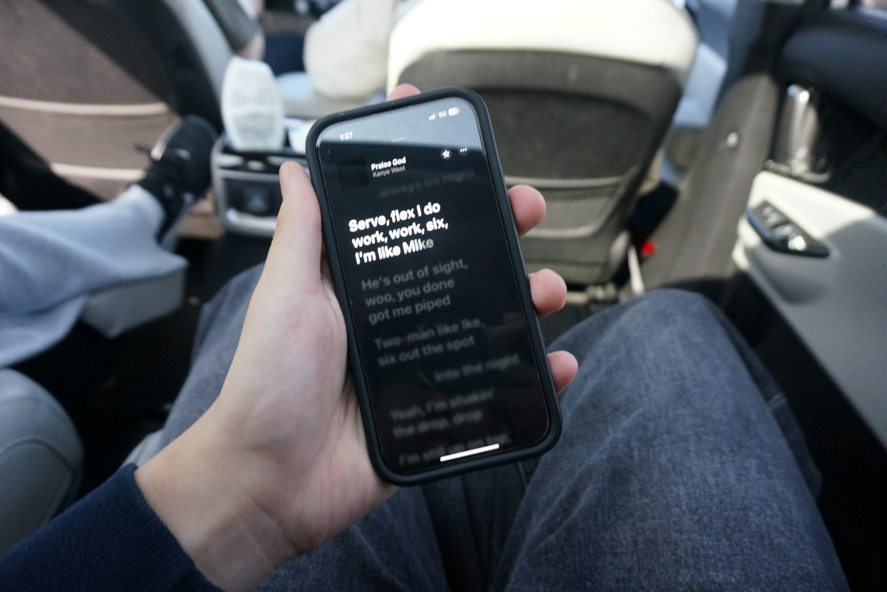
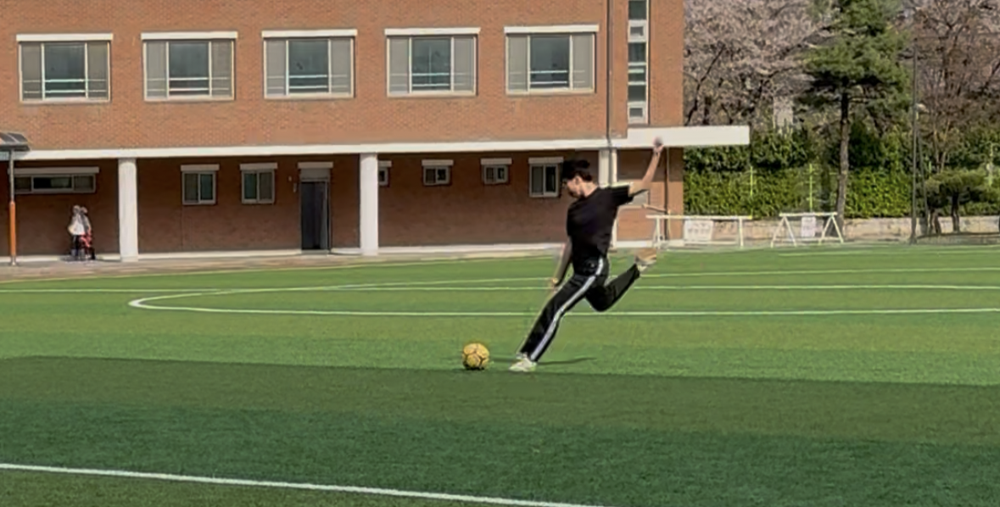

Music
음악은 저에게 단순한 즐거움을 넘어 영감을 주는 매체입니다. 좋아하는 아티스트의 곡을 감상하거나 새로운 장르를 탐험하며 세상을 바라보는 감성을 키웁니다.
My hobbies, daily life, and the values I pursue as an individual

음악은 저에게 단순한 즐거움을 넘어 영감을 주는 매체입니다. 좋아하는 아티스트의 곡을 감상하거나 새로운 장르를 탐험하며 세상을 바라보는 감성을 키웁니다.

찰나의 순간을 기록하는 사진 촬영을 즐깁니다. 렌즈를 통해 바라보는 세상의 구도와 빛은 일상의 평범함을 특별한 예술로 바꿔주는 힘이 있습니다.

그라운드 위에서 동료들과 소통하며 뛰는 축구는 저의 열정의 원천입니다. 팀워크의 중요성을 배우고, 한계를 극복하는 과정에서 에너지를 얻습니다.